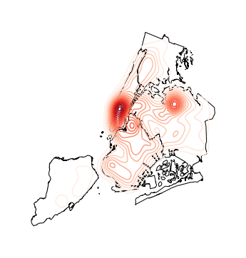

geoplot.kdeplot¶
-
geoplot.kdeplot(df, projection=None, extent=None, figsize=(8, 6), ax=None, clip=None, **kwargs)¶ Geographic kernel density estimate plot.
Parameters: - df (GeoDataFrame) – The data being plotted.
- projection (geoplot.crs object instance, optional) – A geographic projection. Must be an instance of an object in the
geoplot.crsmodule, e.g.geoplot.crs.PlateCarree(). This parameter is optional: if left unspecified, a pure unprojectedmatplotlibobject will be returned. For more information refer to the tutorial page on projections. - clip (None or iterable or GeoSeries, optional) – An iterable of geometries that the KDE plot will be clipped to. This is a visual parameter useful for “cleaning up” the plot. This feature has not yet actually been implemented!
- figsize (tuple, optional) – An (x, y) tuple passed to
matplotlib.figurewhich sets the size, in inches, of the resultant plot. Defaults to (8, 6), thematplotlibdefault global. - extent (None or (minx, maxx, miny, maxy), optional) – If this parameter is set to None (default) this method will calculate its own cartographic display region. If an extrema tuple is passed—useful if you want to focus on a particular area, for example, or exclude certain outliers—that input will be used instead.
- clip – If this argument is specified,
kdeplotoutput will be clipped so that the heatmap only appears when it is inside the boundaries of the given geometries. - extent – If this parameter is unset
geoplotwill calculate the plot limits. If an extrema tuple is passed, that input will be used instead. - figsize – An (x, y) tuple passed to
matplotlib.figurewhich sets the size, in inches, of the resultant plot. Defaults to (8, 6), thematplotlibdefault global. - ax (AxesSubplot or GeoAxesSubplot instance, optional) – A
matplotlib.axes.AxesSubplotorcartopy.mpl.geoaxes.GeoAxesSubplotinstance onto which this plot will be graphed. If this parameter is left undefined a new axis will be created and used instead. - kwargs (dict, optional) – Keyword arguments to be passed to the
sns.kdeplotmethod doing the plotting (ref).
Returns: The axis object with the plot on it.
Return type: AxesSubplot or GeoAxesSubplot instance
Examples
Give it a dataset containing a geometry of
shapelyPointobservations, andkdeplotwill return a geospatial kernel density estimate plot showing where they are.A basic
kdeplotspecified data and, optionally, a projection.import geoplot as gplt import geoplot.crs as gcrs gplt.kdeplot(collisions, projection=gcrs.AlbersEqualArea())

However, kdeplots need additional geospatial context to be interpretable. In this case (and for the remainder of the examples) we will provide this by overlaying borough geometry.
ax = gplt.kdeplot(collisions, projection=gcrs.AlbersEqualArea()) gplt.polyplot(boroughs, projection=gcrs.AlbersEqualArea(), ax=ax)

Most of the rest of the parameters to
kdeplotare parameters inherited from the seaborn method by the same name, on which this plot type is based. For example, specifyingshade=Trueprovides a filled KDE instead of a contour one:ax = gplt.kdeplot(collisions, projection=gcrs.AlbersEqualArea(), shade=True) gplt.polyplot(boroughs, projection=gcrs.AlbersEqualArea(), ax=ax)
Use
n_levelsto specify the number of contour levels.ax = gplt.kdeplot(collisions, projection=gcrs.AlbersEqualArea(), n_levels=30) gplt.polyplot(boroughs, projection=gcrs.AlbersEqualArea(), ax=ax)

Or specify
cmapto change the colormap.ax = gplt.kdeplot(collisions, projection=gcrs.AlbersEqualArea(), cmap='Purples') gplt.polyplot(boroughs, projection=gcrs.AlbersEqualArea(), ax=ax)

Oftentimes given the geometry of the location, a “regular” continuous KDEPlot doesn’t make sense. We can specify a
clipof iterable geometries, which will be used to trim thekdeplot(note: if you have setshade=Trueas a parameter you may need to additionally specifyshade_lowest=Falseto avoid inversion at the edges).gplt.kdeplot(collisions, projection=gcrs.AlbersEqualArea(), shade=True, clip=boroughs)